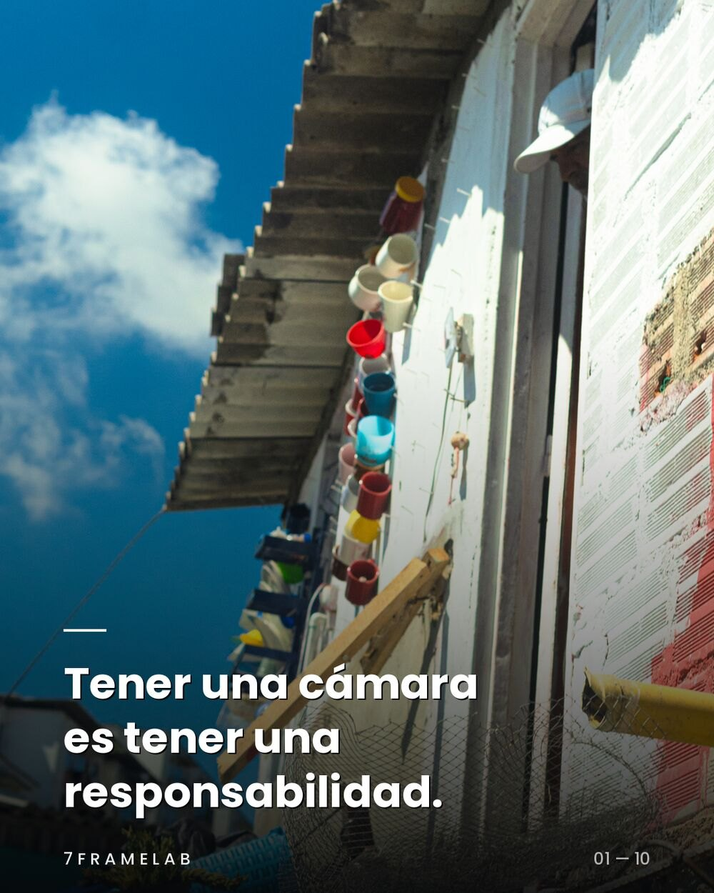
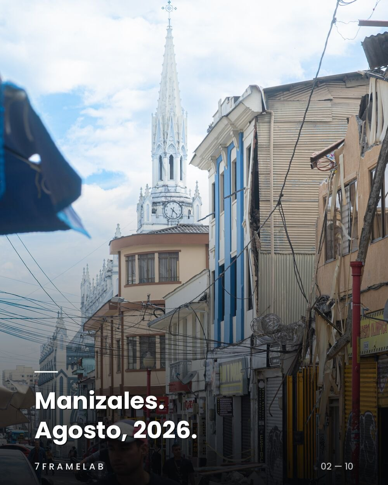
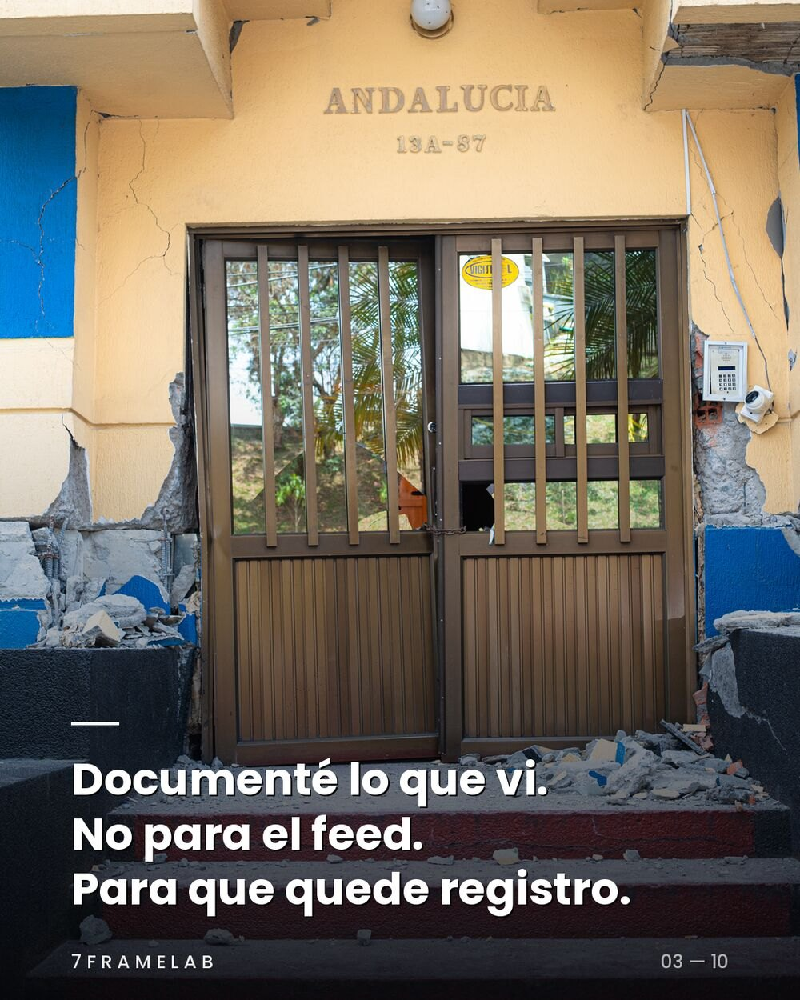
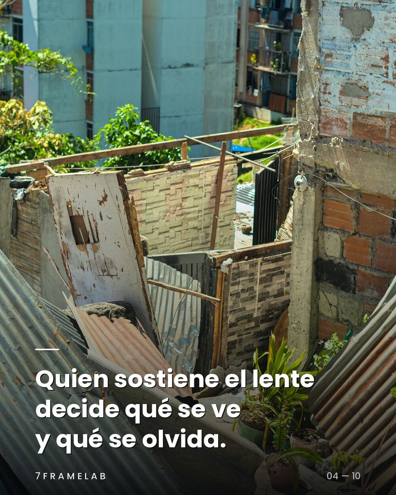
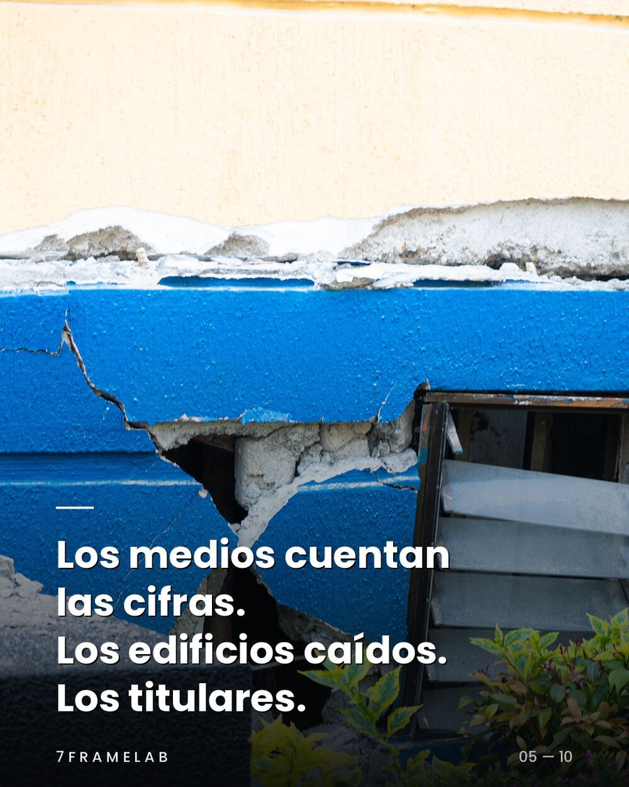
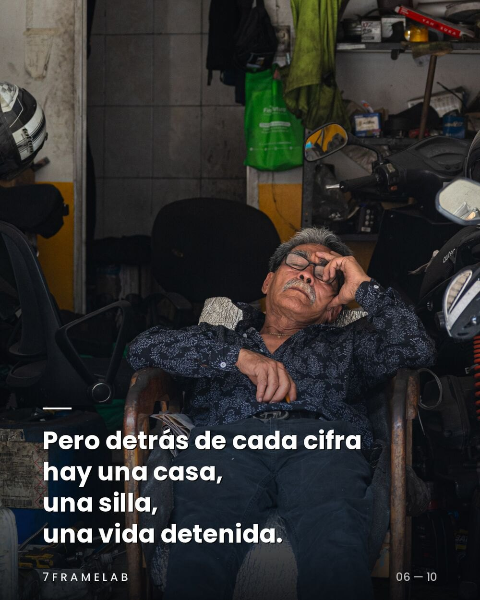
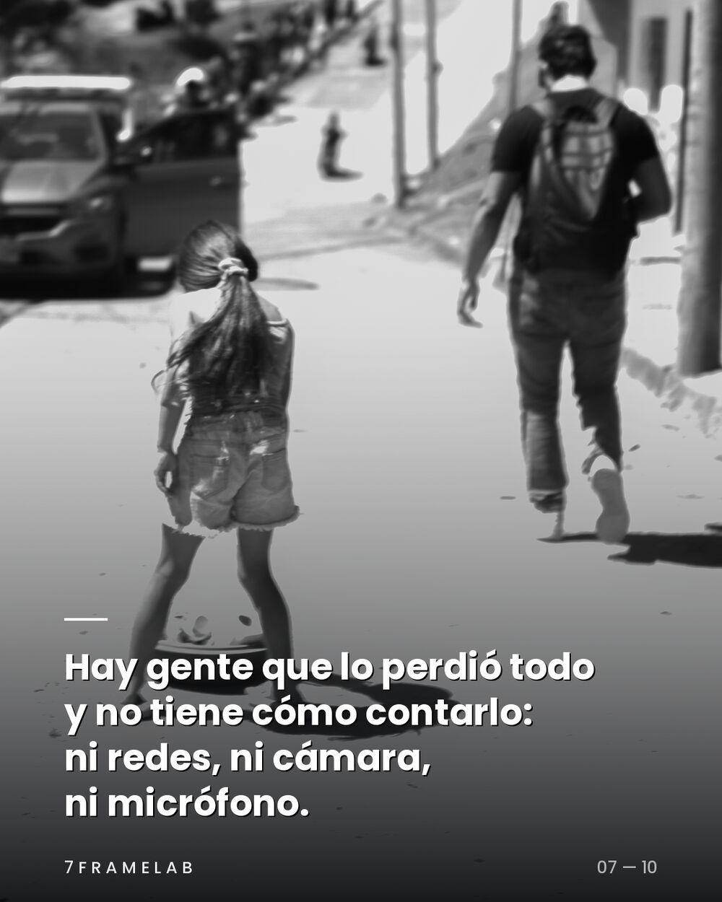
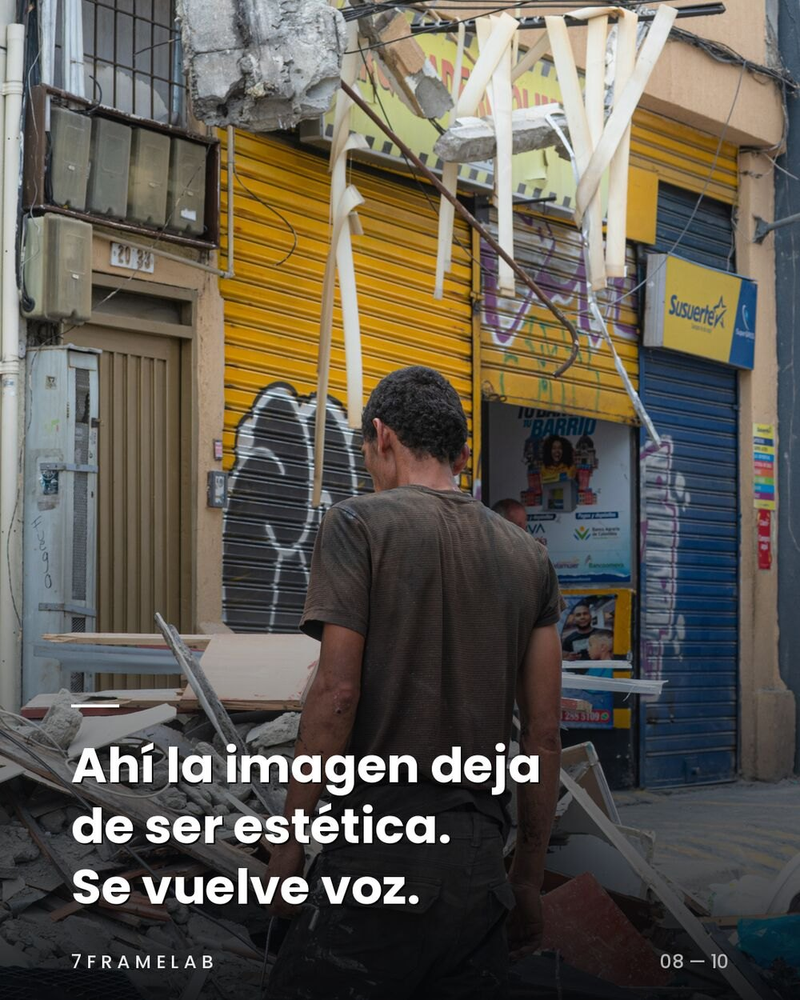
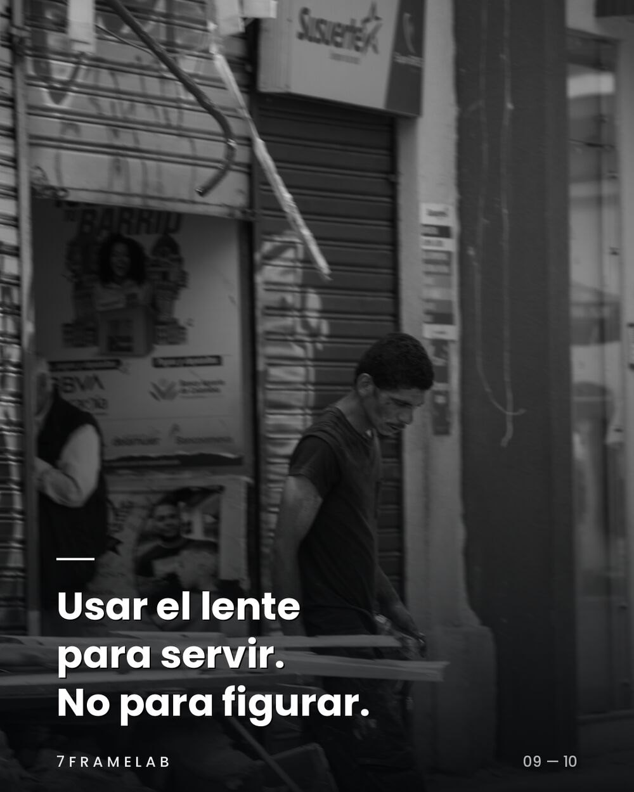
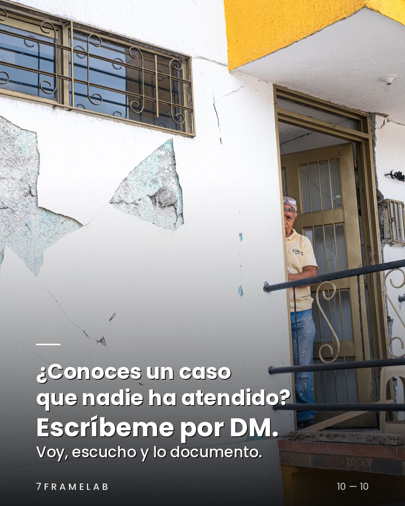

Estudio creativo audiovisual · Manizales, Colombia
Tu marca, bien contada.
Antes de prender una cámara, hacemos una pregunta. ¿Qué necesitas comunicar?
Frame 01/07 Estudio
La imagen tiene que tener una razón para existir.
- Qué necesita decir la marca.
- A quién le habla.
- Cómo se ve para que funcione.
7FrameLab es un estudio creativo audiovisual nacido en Colombia. Convertimos ideas, identidades y objetivos de comunicación en historias visuales, juntando estrategia, narrativa y producción.
Trabajamos con marcas, artistas y emprendimientos que tienen algo que decir. Nuestro trabajo es encontrar la mejor manera de contarlo.
- →La creatividad necesita estrategia para dar resultados.
- →La estrategia necesita creatividad para diferenciarse.
- →La calidad se mide por lo que resuelve, no por el tamaño de la producción.
Frame 02/07 Trabajo
Lo que hemos contado
En movimiento
Toca un video para pausarloMás en @7framelab en Instagram.
Frame 03/07 Documental
Tener una cámara es tener una responsabilidad.
Manizales, agosto de 2026. Después del terremoto salimos a registrar lo que las cifras no cuentan: las casas, las sillas, las vidas detenidas. Diez fotografías sobre usar el lente para servir.










Frame 04/07 Servicios
Qué hacemos
Cada servicio empieza por el mismo lugar: entender el problema de comunicación. El formato viene después.
Producción audiovisual
Video comercial, lanzamientos y piezas de marca, de la preproducción a la entrega final.
Marcas · EventosFotografía
Retrato, moda, producto y espacios. Fotos editadas y listas para el uso que van a tener.
Moda · Airbnb · ProductoContenido para artistas
DJs, músicos y creadores. Cobertura de sets en entornos oscuros, retrato de prensa y visuales.
DJs · MúsicaPodcast y conversación
Grabación multicámara con audio cuidado y cortes verticales para redes.
Creadores · MarcasDocumental y storytelling
Investigación, concepto y narrativa para historias que necesitan tiempo y criterio.
Cultura · CausasContenido para redes
Reels, carruseles y calendarios con intención. Entregas en 9:16, 4:5 y 16:9.
Instagram · TikTok · YouTube
Frame 05/07 Proceso
Pensar antes de producir
Cuatro pasos, siempre en este orden. Así sabes qué recibes y cuándo.
- 1
Lectura
Nos sentamos a entender la marca, el público y lo que tiene que pasar después de ver la pieza.
Sale: lectura del proyecto - 2
Idea
Una idea central, un enfoque narrativo y referencias visuales. Nada se graba sin esto aprobado.
Sale: propuesta creativa - 3
Producción
Rodaje y fotografía con el equipo justo. Si es un evento, entregamos material en tiempo real.
Sale: material en bruto - 4
Entrega
Edición, color con nuestros looks y formatos listos para cada red, en la fecha acordada.
Sale: piezas finales
Frame 06/07 Laboratorio de color
Nuestros looks
Desarrollamos nuestras propias paletas inspiradas en película fotográfica y en la estética de los 90. Así foto y video de un mismo proyecto se ven igual.
Vista aproximada en el navegador. Arrastra para comparar.
- Foto
- Presets de Lightroom (.xmp), escritorio y móvil
- Video
- LUTs .cube para Sony S-Log3 y iPhone Apple Log
- Edición
- Biblioteca instalada en DaVinci Resolve
- Salida
- Rec.709
Frame 07/07 Contacto
¿Qué necesitas comunicar?
Cuéntanos tu idea. Respondemos con una primera lectura del proyecto.